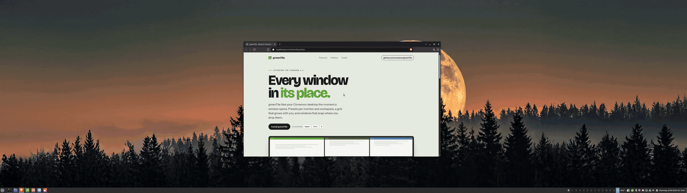

Drop it, it snaps
Move a window by hand and let go. It lands in the slot under the pointer and its neighbours make room. Drag it to another monitor and both screens retile.
Cinnamon can snap a window to half or a quarter of the screen, one window at a time. It does not arrange your windows for you. For that you need an extension, and this page shows how to set one up, without leaving Cinnamon.

Cinnamon's window manager, Muffin, has tiling built in. It is good at placing a single window quickly. Everything beyond that is up to you.
With greenTile installed and enabled (see install below), this is the whole setup. Nothing has to be configured first.
Press the key on the workspace you want tiled. It acts on the monitor of the focused window, and its windows tile at once. Auto mode is stored per monitor and workspace, so it only affects the one you are on. A single window is left as it is unless you switch on Fill the monitor with a single window in the settings.
New windows join the end of the layout. Opening, closing, minimizing or restoring a window retiles the monitor after 300 ms. Without a preset, a monitor 2100 px wide or wider gets up to six windows in one row, then even rows; a narrower one gets up to three in a row, then three columns with stacks.
The preset panel offers twelve editable starters, from Two columns to Center main, each with a live preview of what a click would do right now. Click one to assign it to this monitor and workspace, or paint your own on a 6 × 4 grid.
Drag a border and the neighbours follow; borders are remembered per window count. Drop a window on the outer edge of another to split it; drop it in the middle and it takes that slot while its neighbours make room. Swap with the keyboard, and set a gap of 0 to 48 px in the preset panel.
Let one window float with a key, press again to tile it again. Apps that should never tile go on a list in the settings, matched by window class, title or app id; an app picker fills in installed applications, flatpaks included.
Auto mode off keeps the assigned preset but stops automatic tiling on this monitor and workspace. Turning it back on, or clicking a preset, resumes.
One change to Cinnamon's own keys: on a monitor and workspace with auto mode on, Super+arrow moves the keyboard focus to the neighbouring tiled window instead of pushing the window to a half. Everywhere else, and for windows greenTile does not manage, the native edge tiling stays as it was. Super+arrow itself is Cinnamon's key and is changed in Cinnamon's keyboard settings; all of greenTile's own keys can be changed on the Hotkeys page of its settings.
Requires Cinnamon 6.0.4 or newer. Tested on Linux Mint 21.3 to 22.3 (Cinnamon 6.0.4 to 6.6) with X11. Free software under the GPL v3.
Not yet. greenTile is not listed in the Cinnamon Spices catalogue so far, so it does not show up under Extensions → Download. Until it is, use the release zip.
Download the zip from the latest release, unpack it and run install.sh. It copies the extension to ~/.local/share/cinnamon/extensions/greenTile@carsteneu/ and compiles the translations. It needs flock from util-linux; without msgfmt from gettext the interface stays in English. Then restart Cinnamon and enable greenTile in System Settings → Extensions.
Run ./update.sh from the unpacked zip: it fetches the latest release and installs it. A running Cinnamon keeps the code it loaded at startup, so restart Cinnamon (X11) or log out and back in (Wayland) afterwards.
Building from a checkout is described in the README. If gTile is installed, disable it first: both use SuperG.
# unpack the release zip and install for your user unzip greenTile-*.zip cd greenTile-*/ && ./install.sh # restart Cinnamon on X11 to load the new code Ctrl+Alt+Esc # or Alt+F2, then r # Wayland: log out and back in instead # then: System Settings → Extensions → greenTile → enable # and on the workspace you want tiled: Super+Ctrl+A
Once auto mode is on, these work on their own. The home page has the rest, and the complete list is in FEATURES.md.
Move a window by hand and let go. It lands in the slot under the pointer and its neighbours make room. Drag it to another monitor and both screens retile.
A preset made for four windows still works with three or two. Stacks shrink first, then columns, so the screen is always fully used.
Set 0 to 48 px in the preset panel. Only the edges where two windows meet move in; the outer edges stay flush with the screen.
Borders you move are stored per window count. A fourth window gets its own layout, and when it closes your three-window borders come back.
Each monitor and workspace keeps its own preset and auto state. Hardware identity uses model and serial; failed detection uses a separate fallback key. After a hotplug greenTile waits for the windows to settle before it tiles.
Windows are tiled in the order they already have on screen. Rearrange them by hand and the next retile respects it.